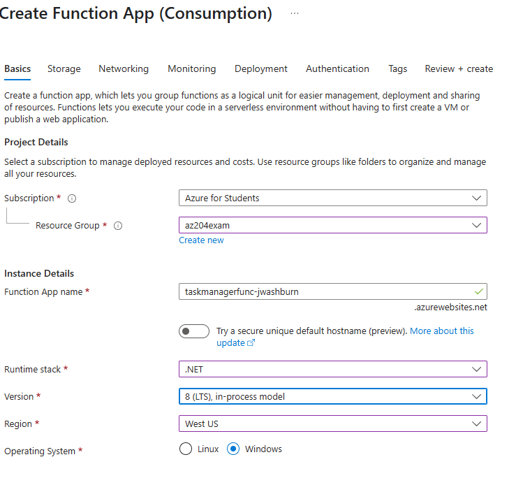

Create Azure Functions for APIs
Functions App to hit the AZ-204 Exam Topics:
- Create and configure an Azure Functions app
- Implement input and output bindings
- Implement function triggers by using data operations, timers, and webhooks
Prerequisites
- .NET SDK 8.0 (Install via winget:
winget install Microsoft.DotNet.SDK.8) - Azure CLI (Install)
- Azure Functions Core Tools (Install)
- Azure Subscription (Free tier or $200 credit recommended for minimal costs)
- Azurite (Install)
- Existing Resource Group
Setup Azure Functions App
In the Azure Portal, create a new Function App: - Check out the tabs for learning experience, we are leaving them default

From your root directory build your function
func init TaskManagerFunctions --dotnet-isolated --target-framework net8.0
Move into the TaskManagerFunctions dir
cd TaskManagerFunctions
Build the function
func new --template "HttpTrigger" --name CreateTask
Test your function locally first
func start
You should see output like
Functions:
CreateTask: [GET,POST] http://localhost:7071/api/CreateTask
Open a browser and go to:
http://localhost:7071/api/CreateTask?name=Test
Expected response should be something like this:
This HTTP triggered function executed successfully. Pass a name in the query string or in the request body for a personalized response.
Deploy to Azure:
func azure functionapp publish taskmanagerfunc-yourname #replace with your function name
Watch for the “Functions in taskmanagerfunc-yourname” section in the output. It should list:
Functions in taskmanagerfunc-yourname:
CreateTask - [httpTrigger]
Invoke url: https://taskmanagerfunc-yourname.azurewebsites.net/api/createtask?code=...
Retrieve the Function Key
az functionapp function keys list --resource-group az204exam --name taskmanagerfunc-yourname --function-name CreateTask
Save the default key value. We are going to use it in the next step.
Test it out: - Construct the URL you need to test - Take your invoke url from Step 5 and append your default key. It should look something like this
https://taskmanagerfunc-jwashburn.azurewebsites.net/api/createtask?code=THISISYOURCODEFROMSTEP7&name=Test
- You should see something like:
Hello, Test. This HTTP triggered function executed successfully.
Add Blob Storage (Placeholder)
Note: We’ll use Blob Storage to store tasks, prepping for Cosmos DB later. Blob Storage and Cosmos DB are in a separate Exam Topic, but we need to create a Storage Account for use in triggers and outputs.
Create Storage Account: - In the Azure Portal, create a Storage Account:
Name: taskmanagerstoreyourname.
Resource group: az204.
Region: West US3
Primary Service: Azure Blob Storage or Azure Data Lake Storage Gen 2
Redundacy: LRS
After Creation:
Go to Data Storage > Containers > Create container named tasks.
Get Connection String:
- In the Storage Account, go to Access keys.
- Copy the Connection string for
key1.
Add to Function App:
- In your Function App (
taskmanagerfunc-yourname), go to Settings > Environment Variables. - Click New+ Add Button.
- Name:
StorageConnection, Value:[your-connection-string]. - Save and restart.
Implement Input and Output Bindings
Note: We’ll use HTTP to read task data (input) and Blob Storage to save tasks (output), matching our web app’s tasks.
Add Blob SDK:
- In
TaskManagerFunctionsdirectory run:
dotnet add package Microsoft.Azure.Functions.Worker
dotnet add package Microsoft.Azure.Functions.Worker.Sdk
dotnet add package Microsoft.Azure.Functions.Worker.Extensions.Storage
dotnet add package Microsoft.Azure.Functions.Worker.Extensions.Http
dotnet add package Microsoft.Azure.Functions.Worker.Extensions.Storage
Update CreateTask Function:
Replace CreateTask.cs with:
using System;
using System.IO;
using System.Text.Json;
using System.Threading.Tasks;
using Microsoft.Azure.Functions.Worker;
using Microsoft.Azure.Functions.Worker.Http;
using Microsoft.Extensions.Logging;
namespace TaskManagerFunctions
{
public class CreateTask
{
private readonly ILogger<CreateTask> _logger;
public CreateTask(ILogger<CreateTask> logger)
{
_logger = logger;
}
public class TaskItem
{
public string Id { get; set; } = Guid.NewGuid().ToString();
public string? Title { get; set; } // Nullable to avoid CS8618
public string? Description { get; set; } // Nullable
public string? DueDate { get; set; } // Nullable
}
[Function("CreateTask")]
public async Task<MultiOutput> Run(
[HttpTrigger(AuthorizationLevel.Function, "post", Route = null)] HttpRequestData req)
{
_logger.LogInformation("Creating new task.");
// Read the request body
string requestBody = await new StreamReader(req.Body).ReadToEndAsync();
TaskItem? task = JsonSerializer.Deserialize<TaskItem>(requestBody, new JsonSerializerOptions { PropertyNameCaseInsensitive = true });
if (task == null || string.IsNullOrEmpty(task.Title))
{
var badRequestResponse = req.CreateResponse(System.Net.HttpStatusCode.BadRequest);
await badRequestResponse.WriteStringAsync("Please provide a valid task with a title.");
return new MultiOutput
{
Response = badRequestResponse,
BlobOutput = null
};
}
// Generate a new ID for the task
task.Id = Guid.NewGuid().ToString();
_logger.LogInformation($"Saving task: {task.Title}");
// Serialize the task to JSON for Blob storage
string blobOutput = JsonSerializer.Serialize(task);
// Return a success response
var response = req.CreateResponse(System.Net.HttpStatusCode.OK);
await response.WriteAsJsonAsync(task);
return new MultiOutput
{
Response = response,
BlobOutput = blobOutput
};
}
// Define the multi-output response
public class MultiOutput
{
public HttpResponseData Response { get; set; }
[BlobOutput("tasks/{Id}.json", Connection = "AzureWebJobsStorage")]
public string BlobOutput { get; set; }
}
}
}
Test Locally:
Update local.settings.json:
{
"IsEncrypted": false,
"Values": {
"AzureWebJobsStorage": "DefaultEndpointsProtocol=http;AccountName=devstoreaccount1;AccountKey=Eby8vdM02xNOcqFlqUwJPLlmEtlCDXJ1OUzFT50uSRZ6IFsuFq2UVErCz4I6tq/K1SZFPTOtr/KBHBeksoGMGw==;BlobEndpoint=http://127.0.0.1:10000/devstoreaccount1;",
"FUNCTIONS_WORKER_RUNTIME": "dotnet-isolated"
}
}
Run:
func start
POST with curl or Postman:
curl -X POST http://localhost:7071/api/CreateTask -H "Content-Type: application/json" -d '{"Title":"Test Task","Description":"Do this","DueDate":"2025-04-15"}'
Check the tasks container (local Azurite or Portal) for a [guid].json file with the task JSON.
Deploy and Test: Deploy:
func azure functionapp publish taskmanagerfunc-yourname
Test:
curl -X POST https://taskmanagerfunc-yourname.azurewebsites.net/api/createtask?code=[your-key] -H "Content-Type: application/json" -d '{"Title":"Azure Task","Description":"Deployed","DueDate":"2025-04-15"}'
Verify the tasks container in the Portal has a new JSON file.
Why do this? HTTP input reads task data, Blob output saves it, hitting exam goals. Preps for Cosmos DB without needing it now.
Implement Function Triggers
Note: Our HTTP trigger covers webhooks. We’ll add a timer trigger and Blob trigger for data operations.
Add a Timer Trigger:
In TaskManagerFunctions, create:
func new --template "TimerTrigger" --name CheckTasks
Edit CheckTasks.cs:
using Microsoft.Azure.Functions.Worker;
using Microsoft.Extensions.Logging;
namespace TaskManagerFunctions
{
public class CheckTasks
{
private readonly ILogger<CheckTasks> _logger;
public CheckTasks(ILogger<CheckTasks> logger)
{
_logger = logger;
}
[Function("CheckTasks")]
public void Run([TimerTrigger("0 */5 * * * *")] TimerInfo myTimer)
{
_logger.LogInformation($"Timer triggered at: {DateTime.Now}");
_logger.LogInformation("Checking tasks (placeholder for future logic)...");
}
}
}
Note: Runs every 5 minutes.
Add a Blob Trigger:
Create:
func new --template "BlobTrigger" --name ProcessTask
Edit ProcessTask.cs:
using Microsoft.Azure.Functions.Worker;
using Microsoft.Extensions.Logging;
namespace TaskManagerFunctions
{
public class ProcessTask
{
private readonly ILogger<ProcessTask> _logger;
public ProcessTask(ILogger<ProcessTask> logger)
{
_logger = logger;
}
[Function("ProcessTask")]
public void Run([BlobTrigger("tasks/{name}.json", Connection = "StorageConnection")] string taskJson)
{
_logger.LogInformation($"New task file detected: {taskJson}");
}
}
}
Test Locally:
Ensure local.settings.json has StorageConnection.
Run:
func start
For timer: Wait 5 minutes, see “Checking tasks...” in console.
For Blob: Add a JSON file to tasks (via Azurite or Portal), check console for “New task file detected...”.
Deploy and Test:
func azure functionapp publish taskmanagerfunc-yourname
Timer: Wait 5 minutes, check Portal > Functions > CheckTasks > Monitor > Logs.
Blob: Upload a JSON to tasks container, check ProcessTask logs.
Why do this? Timer (scheduled), Blob (data operation), and HTTP (webhook) triggers cover all exam requirements.
Next Steps
- Do everything again, but this time, but use the CLI where possible.
- If you are going to take break, you could clean up here, but the next section builds on what we have done here.